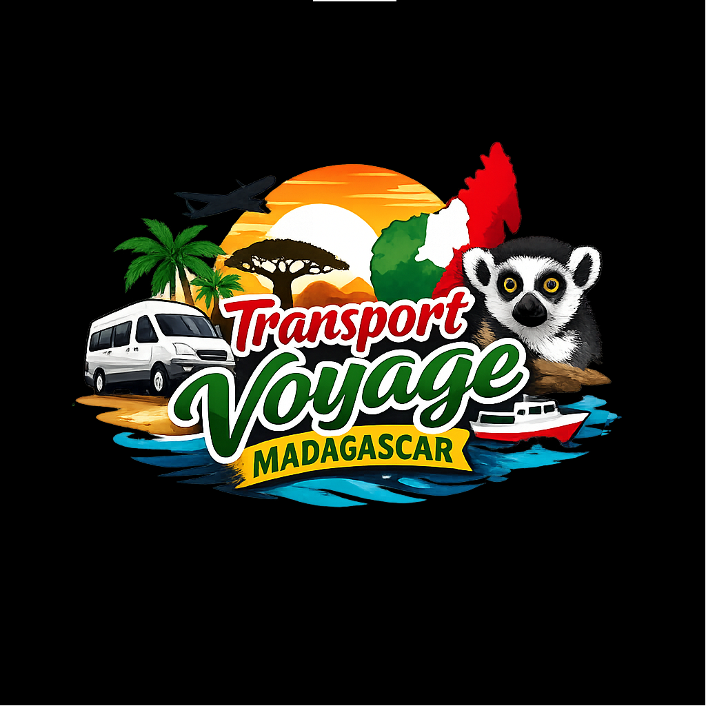

"Voyagez en toute sécurité à Madagascar"
Notre entreprise est spécialisée dans le transport de voyage avec pour mission d'offrir un voyage
fiable, sécurisé et confortable.
Nous sommes à votre disposition pour toutes les régions que vous voulez visiter.
Nos voitures sont confortables avec des sièges luxueux et propres.
Tous les voyageurs peuvent se connecter au WIFI.
Nos chauffeurs sont expérimentés et responsables.